Pen Mania
For certain individuals, the wide array of options can easily become an obsession. It doesn't matter what the item is—it could be something expensive like cars or something cheap and ordinary like a pen. You may find yourself facing choice paralysis, or you might become a compulsive collector. To avoid this fate, I will simply "collect" various pens virtually here. Hopefully, I will be able to select one or two to use later in my drawing sessions.
Why Fountain Pens?
They are the ultimate writing tool. Yes, even in 2030, if you want the most comfortable and stylish expression of line on paper, there is simply no better alternative. For the record, I will admit that modern, expensive pressurized rollerballs and some brush pens come close in comfort. However, they don’t last forever.
You may already know that even the cheapest ballpoint pens have refills available, but that's akin to replacing the entire pen. If the manufacturer goes out of business or changes the production process, your writing experience will change. This is not the case with a fountain pen. The nib can last a lifetime, and you can fill it with virtually any color or type of ink available. Even if the EU were to completely ban stationery products in an effort to combat weather change, you could still make ink at home like a true rebel!
So, if you share that whimsical romantic notion of buying one or two pens to use for the rest of your life, there truly is no better tool for that purpose. I discovered a couple of old fountain pens my parents used in school, and honestly, they are smooth, comfortable writers despite being over 70 years old. All I had to do was flush them with water and refill them with ink to "restore" them.
Pen Anatomy
Before you begin exploring my modest catalog of pens or delving deeper into the content, it's important to familiarize yourself with basic pen structure. This knowledge will help you understand the terminology and know what to look for.
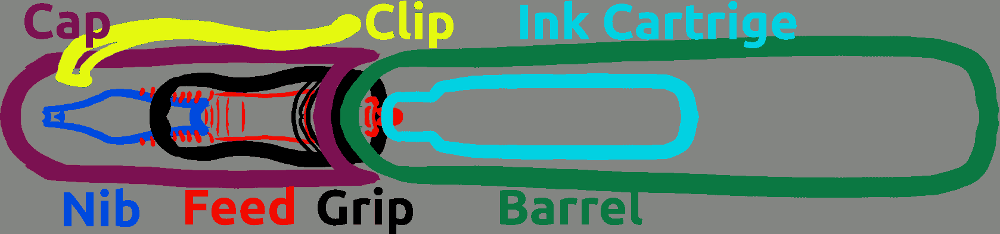
The fountain pen is a relatively simple device, consisting of only about six parts. It functions as a feed system, with an ink reservoir on one end and a polished metal nib on the other that delivers ink onto the paper. All of this is encased in a tube to prevent the ink from drying out.
Feed system
From a technical perspective, the most important aspect is the feed system. Since humanity first learned to read and write, there has been a desire to improve dip pens into the self-inking versions we have today. Various approaches to engineering the feed system emerged, but true perfection was only achieved following the Industrial Revolution. Notable names like Cross, Waterman and Parker were initially responsible for incremental design improvements, and their Names now represent companies producing pens to this day.
There are only two types of feed systems available in modern fountain pens: the injection-molded plastic feeds with their characteristic fins, and a similar-looking imitation that uses a wick. The wick version can typically be found in the cheapest pens aimed at young children, generally priced under $5. The wick functions through capillary action, drawing ink from the cartridge and delivering it to the nib. However, this system presents challenges in cleaning, and the wick will eventually degrade. Additionally, the pen will dry out more quickly than those equipped with a traditional feed system. The only way to ascertain which feed system your pen uses is to disassemble it. Why do they design the wick feed system to resemble the one with fins? Likely to prevent confusion among customers. Would you purchase a $3 fountain pen that doesn’t look like a fountain pen?
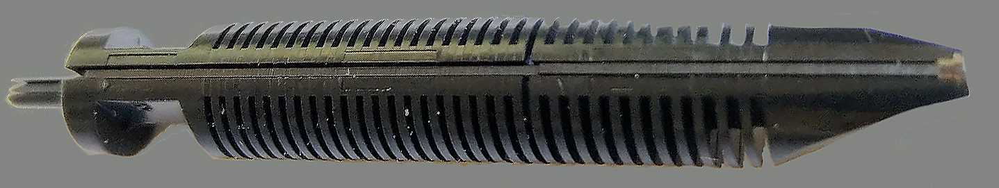
The reason fountain pens don't leak ink, even when held upside down, is due to the combination of air pressure and capillary action. Before ink can exit the pen, an equal volume of air must enter the reservoir. The intricate shape and positioning of the fins on the feeder maintain this delicate balance. Too much air, and the pen will leak ink; too little, and it won't write at all.
Some brands construct their feeds from ebonite, with variations such as short or long feeds, yet there appears to be little difference in performance among them. Regardless of design or material, manufacturers tend to achieve consistent functionality.
Nib
The nib is the main attraction of fountain pens, and many enthusiasts are particularly obsessed with them. They often desire gold nibs in specific sizes, with particular flexibilities, and engraved logos. A good nib glides over paper like a hot knife through butter, while a bad nib feels like a rusty nail scraping a chalkboard. At first glance, it may seem that each brand offers dozens of different nibs, making it impossible to try them all; this is a misconception.
There are essentially three nib manufacturers supplying their nibs to various brands. Whether you are purchasing a $30 pen from the USA, a $100 customized ebonite pen from India, or a $3,000 luxury handmade urushi pen from Japan, they all utilize nibs from one of these German manufacturers: Jowo, Bock and Schmidt. There are a few exceptions of brands that produce their own nibs, such as Lamy, Sailor and infamous "no name brands" from China. Thus, from the perspective of a seeker of the perfect nib, you only need to explore these six manufacturers for your pen.
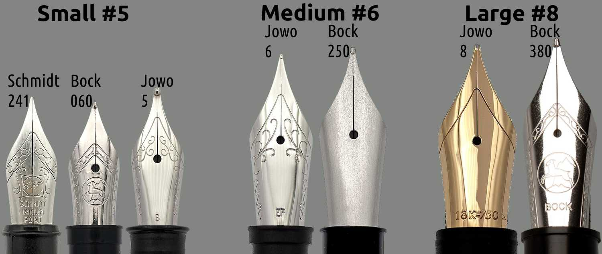
There are many intricate details to consider when selecting a nib. These include the material it is made from, the shape and size of the nib, the tip shape (known as the grind), and the overall quality of the nib itself. The most noticeable factor is the physical size of the nib: small, medium, large, and the more exotic options like mini or oversized. It is important to know the nib size of your pen if you plan to purchase replacements or explore different types or brands. The feed and housing systems are often not compatible across brands or even within different sizes from the same brand, but the nib can be swapped easily as long as you have the same size. In terms of performance, the size of the nib does not impact the writing experience. Designers typically choose smaller nibs for slimmer pens and larger nibs for the more expensive models, which tend to be thicker as well.
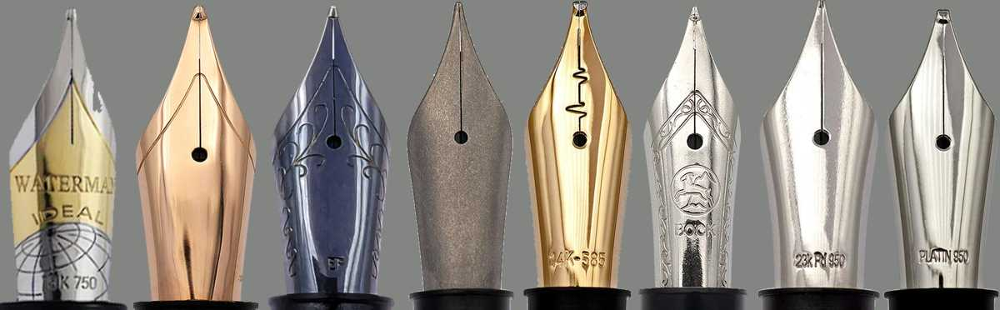
The material used for the nib is crucial. Stainless steel nibs are the most affordable and the most rigid. A firm nib doesn’t necessarily indicate inferior quality; many people actually prefer firm, inexpensive, and nearly indestructible nibs. They are less likely to bend easily. The second most common material is golden alloy. Gold is a naturally soft metal and quite expensive, making golden nibs very springy and favored by many writers for their soft feedback. Additionally, they allow for variation in line thickness by simply applying more pressure. However, it's important to note that the soft nature of gold makes the nib susceptible to accidental damage. If your child gets into your pen collection and starts to doodle, the golden nib may not withstand the encounter.
In the realm of more exotic materials, a recent trend is the use of titanium for nibs. Titanium is an extremely durable, lightweight, and somewhat flexible alloy. However, the pricing can be off-putting. Avoid paying $100 for a titanium nib; while it is more expensive than standard steel, it is not nearly as costly as many retailers suggest. Finally, there are high-end options made from noble metals like palladium, platinum, iridium or rhodium. However, if you investigate a nib being sold for $500, you might discover it contains less than 1% of the advertised metal, making it essentially a rip-off. If you want a luxurious nib, opt for gold; otherwise, stick with steel.
The color of the nib is insignificant. Some steel nibs are designed to resemble gold, and some gold nibs have a silver appearance. Thanks to modern technologies such as adonizing, PVD, electroplating or powder coating, it’s possible to apply various finishes to any metal, including combinations of colors. If you prefer a pink or black nib, go for it. Just be aware that more flexible nibs can experience stress on the material, potentially damaging the coating and exposing the base metal underneath. With a natural uncoated steel or gold nib, there’s nothing to peel, but a dual-toned gold nib may present issues.
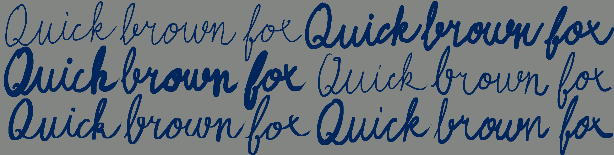
And finally, the standout feature of fountain pens: the ability to choose your line thickness, variation, and grind. Line thickness is self-explanatory, ranging from extra fine, fine, medium, broad, to double broad. If you're ordering a pen from Asian countries like China, they typically offer only extra fine and fine variants. This is due to their writing system, where thicker lines would be impractical. The optimal size is medium—not too thin to cause issues with ink flow or scratchy nibs, and still thin enough to perform well for any task. Broad is ideal for drawing.
With modern nibs, you can achieve line variation without paying a premium for gold nibs. These are known as flexible or omniflex nibs, featuring special cutouts that allow even sturdy stainless steel to bend. However, don’t expect miracles; it’s still just a steel nib. The mechanism is simple: the harder you push, the broader the line becomes.
Lastly, the most exotic option is to alter the grind of the nib. Standard nibs are perfectly round, producing an even line in all directions. However, italic, cursive, architect, music, bent, and stub nibs are different; depending on the angle and direction you write, they alter the line. If you want to effortlessly enhance your handwriting without learning anything new, simply purchase a 1.1 stub nib. It will subtly improve the aesthetics of your writing.
Filling Mechanism
The way ink is stored and refilled is a crucial aspect of choosing your ideal fountain pen. A poor filling mechanism can be a deal breaker for many users. There are only three options in modern pens: cartridges, piston, and eyedropper.
The most primitive and somewhat rare option is the eyedropper system. With this method, you literally pour the ink into the barrel of the fountain pen. Typically, you use an eyedropper (which often comes with the ink bottle), giving this filling system its name. Using syringes is also a very practical option. Every cartridge pen can be manually converted into an eyedropper pen: simply seal all the holes with glue, add an O-ring to the threads, and instead of inserting a cartridge or converter, pour the ink directly into the barrel. It is quite popular to transform inexpensive transparent pens into eyedroppers. The transparency of the body is visually appealing, as it allows you to watch the ink and air bubbles move around, and it is practical as well, enabling you to easily check how full the pen is.
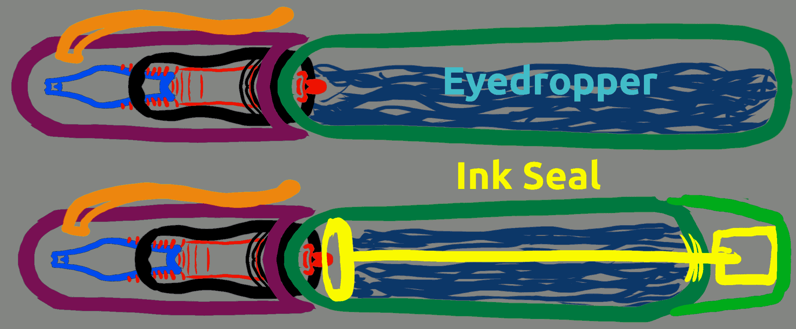
The advantages of this basic design are clear: it offers maximum ink capacity without the need for extra components. So, what’s the downside? Ink burping! If you paid attention in your physics classes, you know that air can easily be compressed and decompressed through various methods, such as temperature change. A standard ink cartridge or converter holds roughly only 1 milliliter of ink, whereas an eyedropper pen can hold even 20 milliliters. Therefore, the emptier your eyedropper pen, the more air it contains, increasing the likelihood of ink splattering and ruining both your artwork and writing. This filling system is a risk, so avoid it at all costs unless you enjoy living dangerously.
Some pens are designed as eyedroppers right from the factory and may include an ink chamber seal mechanism. This means that simply unscrewing the cap is not enough to use the pen; you must also unscrew the other end to allow ink to flow into the feed. While this design enhances the pen's security during transport, it does nothing to eliminate the possibility of ink burping while you write.
The second design is not only simple but also very elegant: cartridges. Cartridges are fantastic. They are inexpensive, and once one is depleted, you can either replace it with a new cartridge or simply refill it using an eyedropper or injection, just as you would with an eyedropper pen. Additionally, most pens can accommodate two small international cartridges: one in use and one sealed inside the body. So even if you’re out and run out of ink, you can just unscrew the body, insert the backup cartridge, and continue writing.
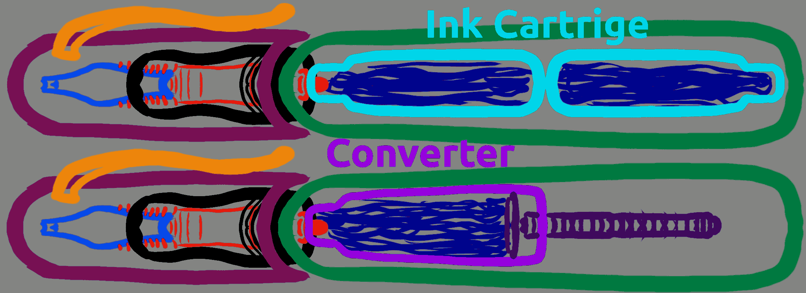
There is only one downside to this system: not every brand adheres to the same international cartridge standard. Some manufacturers prefer to nickel-and-dime their customers by designing pens that only accept their proprietary, overpriced cartridges. Fortunately, there is no proprietary ink yet, so you can navigate this obstacle with a simple bottle of ink and a syringe. When I shop at a medium-sized supermarket for groceries, they don’t even carry fountain pens. However, they do sell international ink cartridges. If I had a Lamy pen, I would have to order spare cartridges online. Do not underestimate the importance of international standards.
The converter is essentially an over-engineered cartridge sometimes made of glass with a built-in piston mechanism. The main idea is that with the converter, you can plunge the pen into a bottle of ink and use air suction caused by the piston to draw the ink into the pen through the nib. However, this process can be incredibly messy, leaving you with the task of wiping off excess ink. Additionally, the converter prevents you from keeping a spare cartridge stored inside the pen's body and typically holds even less ink than a short cartridge. Thankfully, you can simply bypass this contraption and use a cartridge. Typically, pens come with either just cartridges or both cartridges and a converter, allowing you to choose your preferred filling method.
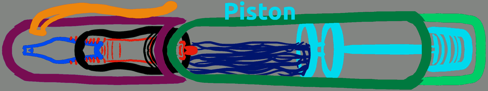
And finally, the most over-engineered filling system currently available in modern pens: the piston filler, sometimes referred to as a vacuum filler. It operates on the same principle as a converter, but instead of using a cartridge, it is integrated into the pen's body itself. Typically, it functions via a screwing motion, although some variations are spring-loaded as well. This mechanism essentially turns the fountain pen into a syringe: to fill the pen, unscrew the back to move the piston forward, submerge the pen into an ink bottle, and then screw the piston back up. Its primary advantage is the increased ink capacity without the "burping" ink issue. However, its downside is the higher likelihood of pen failure due to the many extra moving parts that require lubrication, and to disassemble and clean the pen, you may need an experienced mechanic equipped with a complete toolkit.
Cap
The cap is one of the most overlooked engineering aspects of fountain pens, yet it is just as crucial as the feed system. If the cap does not seal the pen properly, it may experience dry starts or even dry out completely over a weekend of inactivity. Unfortunately, there is no surefire way to determine if the pen features a high-quality, double-sealed, spring-loaded cap that produces a satisfying click or a loose, rattling piece of plastic barely clinging to the pen. The only certainty regarding caps is that screw caps do not wear out over time, while snap caps will eventually degrade. If you want a pen for life, it’s best to choose one with a screw cap.
Ergonomics
Unless you plan to only admire your pens as collectibles, it's essential for them to be ergonomic and comfortable in your hand. Here, I will highlight a few common mistakes designers make when creating pens. It can be very frustrating to invest in a $100 pen, only to discover it causes cramps in your hand, while a $1 ballpoint pen feels more comfortable. It's important to note that the pens listed here may not be unsuitable for everyone; people have varying hand sizes, grips, and needs.
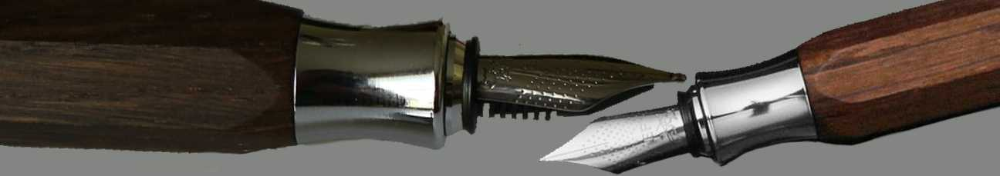
The first example features the Faber-Castell Ondoro. Its aesthetics are superb, showcasing a combination of shiny chrome metal accents and dark textured wood. This beautiful pen is offered at a nearly reasonable price. The wooden body has a hexagonal shape, which provides a hidden benefit that most pens lack: it won't roll off your table! However, there are issues with the grip length and thickness: the grip section is too short, and there is a significant diameter difference between the grip and the barrel. If the grip section were as thick as the body, users could easily hold the pen a bit higher. Unfortunately, the body’s thickness creates sharp edges exactly where most people hold their pens, resulting in a usability nightmare. It’s somewhat amusing to watch reviews of this pen on YouTube, where reviewers awkwardly handle it, insisting that it’s not a big deal while struggling to write just a few words on paper.
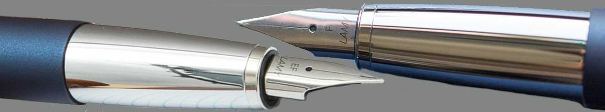
This pen, known as the Lamy Studio, enjoys moderate popularity, but users consistently complain about one recurring issue: its excessively slippery grip. The grip section is adequately sized and roughly the same diameter as the barrel, showcasing a good design in terms of ergonomics. However, the grip is constructed from metal with a chrome finish! The moment your hand becomes even slightly oily or sweaty, it will start to slide toward the nib of the pen due to its convex shape. It's ridiculous to see overpriced luxury pens featuring these metallic, slippery grips. Some manufacturers even go so far as to create plastic grips with a fake chrome finish, which are just as slippery as the genuine metal versions. Whenever you're considering a metallic pen, pay extra attention to the grip finish. Look for a version that has texture, a specific coating, or at least a matte finish. Never purchase a pen with a mirror-like grip section.
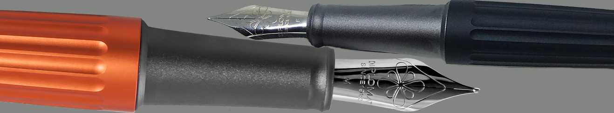
The sleek and contemporary Diplomat Aero pen is a favorite among collectors, who are drawn to its distinctive modern aesthetic. Crafted from metal, it features a PVD matte coating that ensures a secure grip without slipping. However, there is one minor drawback for artists: a noticeable bump between the grip and the barrel. This can be an issue when holding the pen higher up during drawing. Consequently, this pen may restrict your hand placement. Many pens are often deemed unsuitable for this reason.
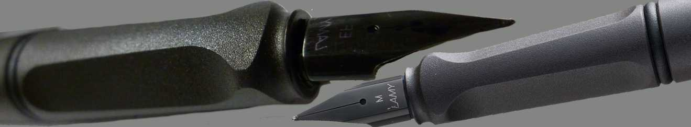
Finally, let's talk about Lamy Safari the fountain pen! This model ranks as the second best-selling fountain pen worldwide (following the Parker 51 and its clones). It seems like everyone has one. The Safari was among the first fountain pens made entirely from modern ABS plastic, the same material used in LEGO. It's affordably priced, lightweight yet nearly indestructible, features an excellent clip, and is available in virtually every color. You can even purchase a metal version. So, what's the downside? The triangular grip is the issue. For younger users learning how to hold a pen properly, this shape can be beneficial. However, for adults with established writing habits or those who use a variety of grip styles, it can be quite uncomfortable.
The pen catalogue
After an exhaustive dive into pen anatomy and ergonomics, we are finally mentally prepared to browse the pen catalog! Do not let the colors or mesmerizing patterns distract you. Focus primarily on the pen's ergonomics in its shape and ensure it has the right filling mechanism and materials you seek. Chances are high that they sell the same pen in the color you desire, rather than the one I randomly picked here. Almost all pens exist in at least black, blue, and red versions, with some brands and models offering hundreds of colorful variants!
Traditional Old School
Fountain pens date all the way back to the 19th century. The design during that time was severely limited by the manufacturers' skills and technology. The body typically resembles a simple tube with threads in the exact spot where you hold the pen. They are often made from various types of plastic, and many luxury brands charge exorbitantly for the privilege of holding an outdated design produced by modern plastic injection molding machines. One thing cannot be denied, though: their appearance is timeless and will not embarrass you at any social gathering. Typically, they feature comfortable, thick grip sections, making them ideal for larger hands.
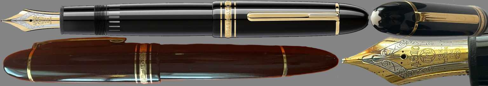
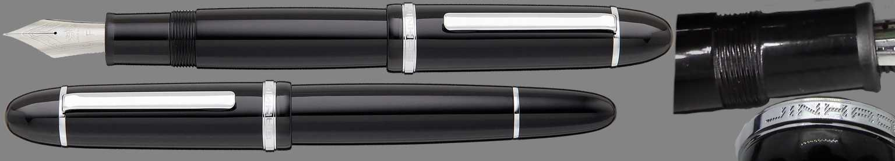
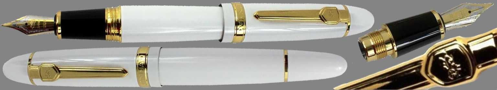
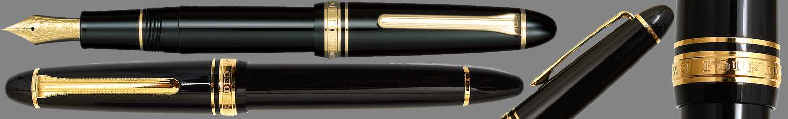
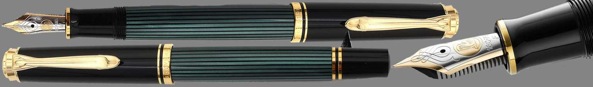
Traditional yet extravagant
In every official gathering, there is always at least one person wearing a red tie or a crisp white suit, standing out from the crowd like a sore thumb. The same old-school design is purposefully crafted to catch the eye. The presence of these classic models demonstrates that there have always been individuals who seek more than the ordinary. Moreover, with these types of designs, companies will often charge a premium for the privilege.
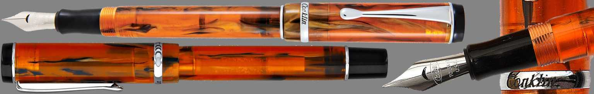
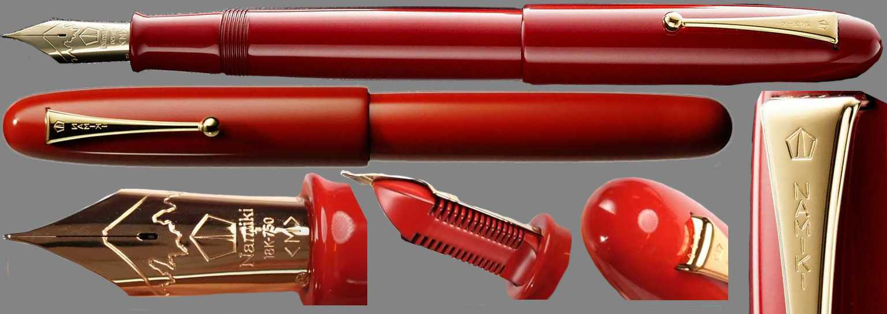
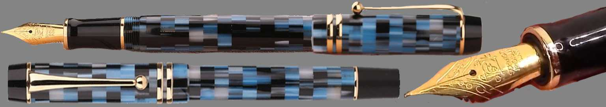
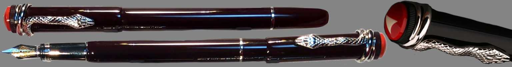
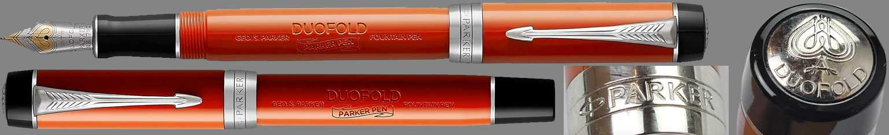
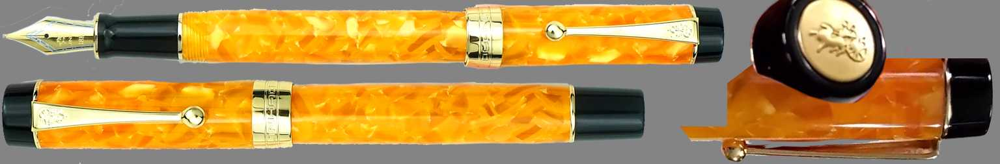
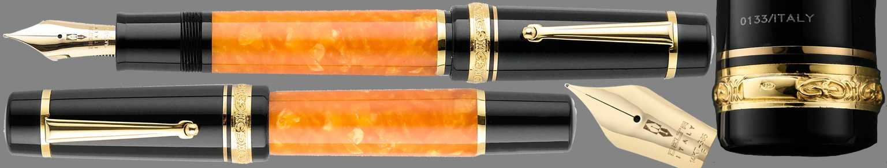
Evolving Tradition
Here we are finally witnessing some evolution in fountain pen design. The incorporation of modern materials, more reasonable prices, innovative filling systems, and eye-catching colors and patterns are all contributing factors. Additionally, pens made from steel and those featuring snap caps are starting to emerge. To clarify, a snap cap is not a downgrade; it enables you to uncap and write with the pen more quickly. In fact, around 70% of pen models could fall into this category. It seems that when designers are tasked with creating a fountain pen, they often reference old designs, make a few tweaks in CAD, and consider it finalized.
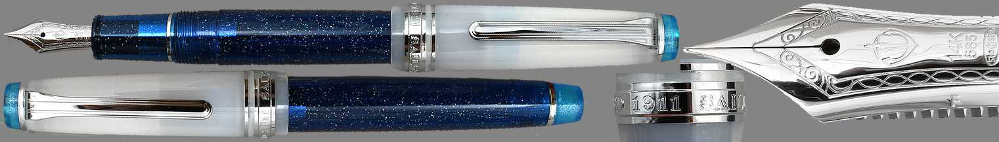
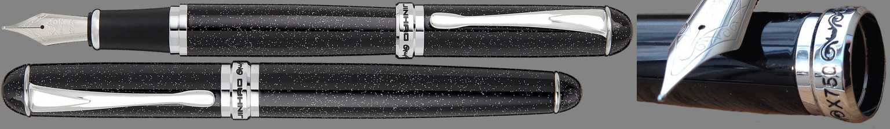
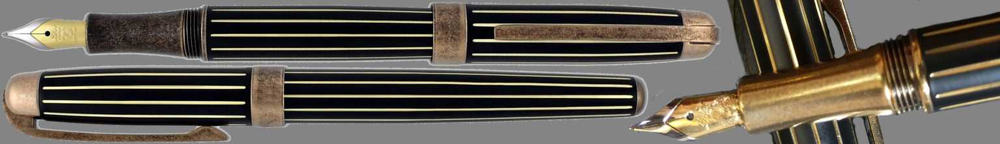
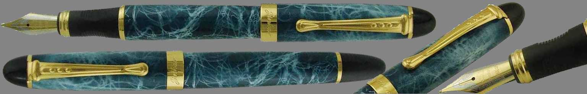
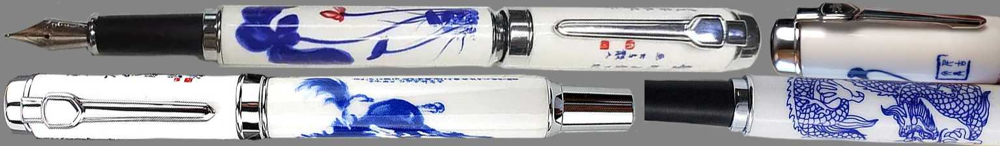
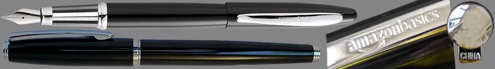
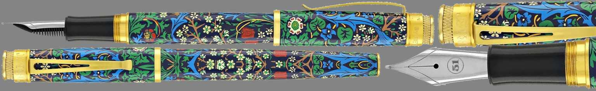
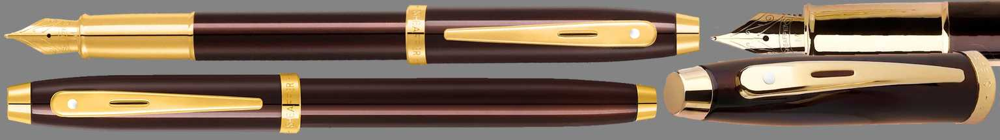
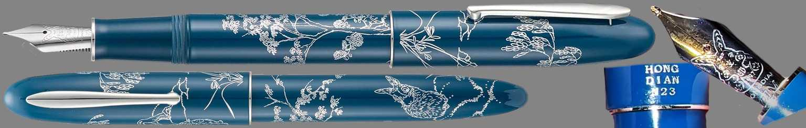
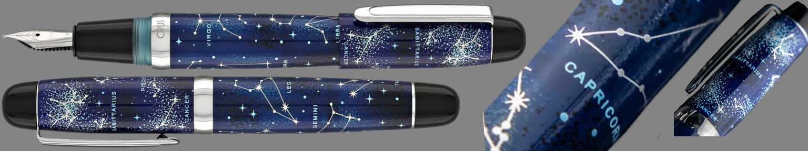
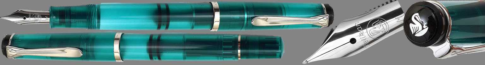
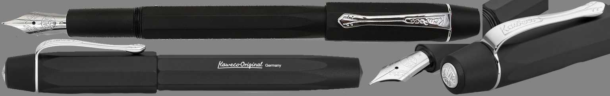
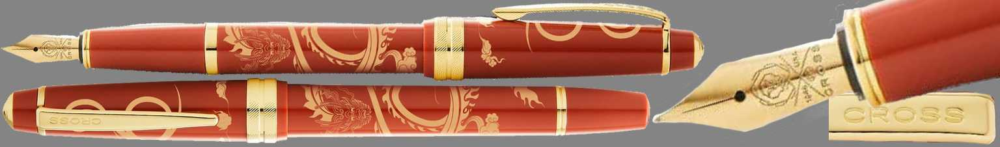
The "China" pen
In 1939, Parker created one of the most unique and successful pens ever: the Parker 51. The rest is history. Half the world has never seen the original, only the Chinese knockoffs, which is why to this day it is referred to as the "China" pen. This pen features exceptional ergonomics, accommodates any grip style, and is perfectly balanced even when capped. There are many pens in this sleek, brilliant design, and you should try at least one of them! They are genuinely that good. These pens are among the thinnest available on the market, making them ideal for smaller hands.
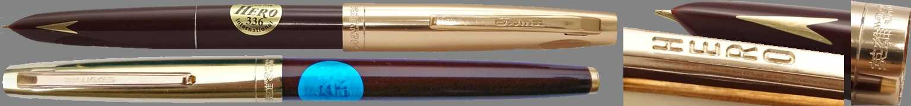
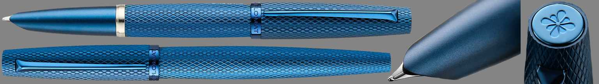
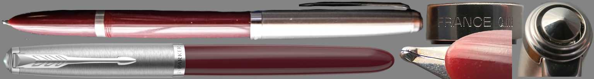
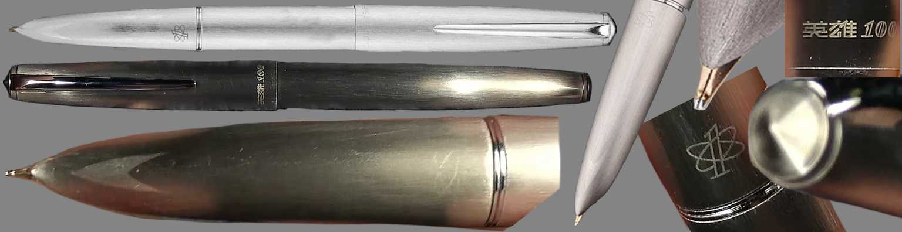
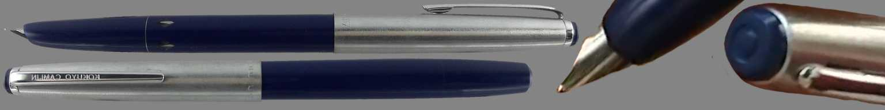
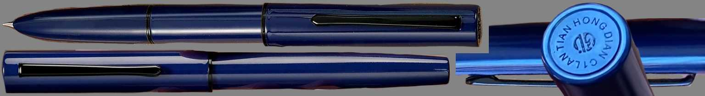
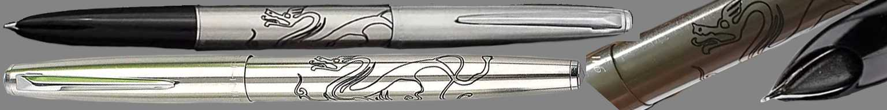
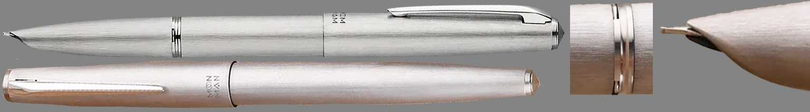
Evolved Parker 51
The faithful replicas of the Parker 51 may not appeal to everyone. Some may lament its concealed nibs, citing the inability to change them, the limited selection of grinds, or the lack of opportunity to admire them. Many will argue it is too thin or express a desire for a better cap mechanism. This category includes those for whom perfection simply isn't sufficient.
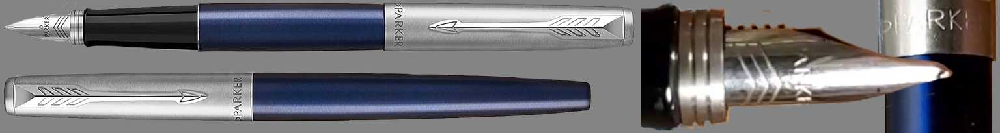
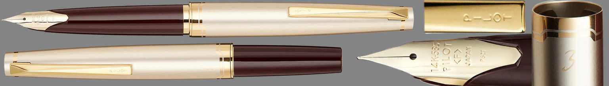
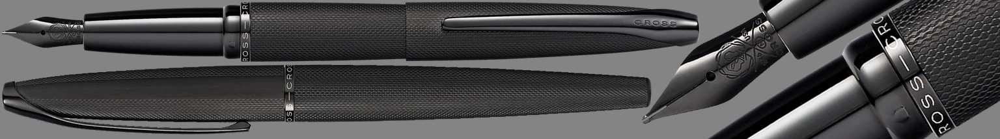
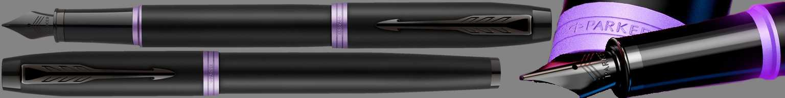
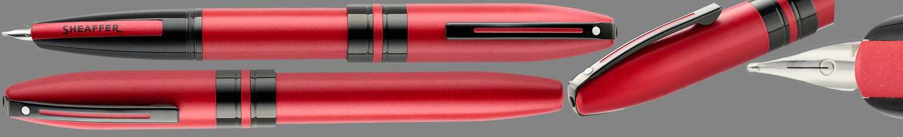
Thickened Parker 51
Alright, we've determined the best small pen for small hands. But what if I'm a man with large hands and still desire optimal ergonomics? Does that exist? Absolutely!
Another brilliant design?
When you examine the 51, you realize its success arises from the absence of a designated grip section. This allows for greater freedom in how you choose to use the pen. Could a cylindrical shape provide the same experience? Likely.
Thicker Cylinder
The thin cylinder has the potential to be as ergonomic as the 51. However, since many of us have larger hands, we need a category for men as well. Curiously, nearly every single bigger cylinder pen you encounter is made from metal.
Pocket pens
Some individuals prefer to keep a pen in their pocket at all times. There may arise a situation where they need to sign a document, or they might purchase a newspaper to fill out a crossword puzzle. For this reason, the pen should be compact, expanding to a comfortable length only when posted. Personally, I consider this to be one of the most impractical uses for fountain pens. A $1 ballpoint pen won’t dry out, won’t leak ink in your bag or on your clothes, and you won’t feel upset if you lose or damage it.
The real pocket pens
A much more realistic scenario is to head outside with a sketchbook or a diary. You're already carrying a stack of papers taller than most pens, so there's no need for a comically short one. Instead, what you need is a pen that won’t lose its cap! None of these pens come with caps; they function like regular click pens. Just click and start writing!
Faceted pens
So far, we have explored cylinder and cigar-shaped pens. But what about triangular, hexagonal, and other shapes? They are quite rare, but they do exist. The primary advantage of these pens is that they don’t roll away from you. Pencil makers discovered this feature centuries ago, but pen makers have yet to catch on. While clips can prevent rolling to some extent, you often unscrew the cap, and then the main body of the pen rolls away! These uniquely shaped pens will always remain exactly where you place them.
Cheapest and Best?
Enough with the fancy nonsense! Just give me the cheapest yet most comfortable pen! I’m not spending over $30 on a pen! There’s definitely a wide range of options available. All of them have ergonomic shapes, rubberized grips, and are quite lightweight. However, don’t expect them to last indefinitely! The rubber grips can deteriorate significantly over time, and most of these models feature low-quality, non-replaceable nibs. They aren’t found in fine writing sections of stores, but rather among school supplies.
Not a Fountain Pen
Let’s say that fountain pens are just for hipsters. You’re looking for something contemporary and modern, yet with the same qualities as traditional pens: long-lasting, refillable, and reliable. There are several options available: rollerballs, brush pens, and Sharpies. However, none of them are designed to endure forever; the tips of rollerballs wear out over time, brush pens lose their precision, and Sharpies require frequent tip replacements just as often as they need their ink refilled.
Show-off Pens
This category of pens appeals to those who crave attention. They venture outdoors, settle onto a park bench, and retrieve their notebook and pen, patiently waiting as onlookers begin to gather around them, inquiring about the unique writing instrument in use. Flashy yet entirely functional.
Style over usability
When you don’t intend to use them for writing, but rather to spark conversations with others. They are either incredibly heavy, have absurd shapes that feel uncomfortable in your hand, or simply resemble a joke rather than a functional pen.
Transparent pens
Some individuals enjoy the intricacies of overengineered filling mechanisms; they find pleasure in watching the ink inside their pens bubble and flow. It’s important to note that many plastic models often have a clear plastic version as well, typically referred to as a demonstrator or simply “demo” for short. Consequently, numerous pens listed in various categories may also qualify for this selection.
Luxury Pens
When you have ample wealth, you often seek to showcase it discreetly, even while signing a contract worth millions. Many luxury brands cater to this clientele. Their designs primarily pay homage to the classics, but they incorporate subtle details. In terms of materials, they typically favor something exceedingly rare or remain true to silver and gold.
21st Century Pens
Last but not least, we present the pens that strive to be distinctive without attracting crowds of onlookers. Featuring unconventional grip sections, unique materials, and striking aesthetics, this collection includes both some of the most iconic pens and their more quirky counterparts.
The best pens
There is a wide variety of pens available. Selecting the best pen is always a highly subjective task. However, you can identify the top pen in most categories using objective criteria such as price, construction, ergonomics, and more. So, without further ado, here are the winners:
The best Parker 51 pen
The ultimate pen for small hands, featuring full steel construction and a proven ergonomic design. The grip is coated in lacquer to prevent slipping, and it boasts a lightweight build along with a modern filling system. Available in a variety of color finishes, the most unique option includes an engraved dragon on its barrel. Best of all, it’s priced affordably! The only downside is the limited nib options, and the feed system is glued into the pen, making fine-tuning nearly impossible. I recommend ordering two: one with a fine nib and another with a fude nib. Fude nibs are specially bent for calligraphy, so when you choose a Chinese classic, you might as well try out this unique nib as well.
The best fat Parker 51 pen
This category proved challenging. No single pen met all the important criteria, so I had to choose the least suboptimal model. This Lamy pen offers a modest selection of colors and an excellent shape, complete with an extra anti-slip grip finish. The pen is made from anodized aluminum, making it very lightweight yet durable. A screw-type cap would be preferable, but the snap cap functions adequately. It only accepts proprietary Lamy cartridges, and you are again limited to Lamy nibs. Fortunately, Lamy nibs are available in a wide range of configurations, from extra fine steel to gold stub nibs. While the price is on the higher end, it remains acceptable for a pen meant to last a lifetime.
The best thin tube pen
Perfection. Almost. The full metal body is incredibly sturdy yet lightweight due to its anodized aluminum construction. The grip section features an anti-slip engraved texture. The screws for the cap have been wisely relocated from the grip to the nib section. Although the clip may seem a bit quirky, I’m sure the bamboo design is an acquired taste. This pen is equipped with a genuine standard #5 nib, allowing you to easily swap it with virtually any other nib available on the market. It even comes in a variety of colors and has an impressively reasonable price tag! The only downside is that the Hongdian company has opted for a proprietary cartridge, much like Lamy. While there are several pens in this category with similar features, they often come at triple or quadruple the price. Long live the bamboo pen!
The best back to school pen
The competition in the school supplies market is intense. The fierce rivalry among brands drives prices down to rock bottom while they rapidly implement incremental design improvements, appealing to both parents and children with aesthetics and ergonomics. Holding these $5 pens provides more comfort than many fine writing brands can offer: rubber grips! However, the drawbacks are evident: rubber deteriorates quickly, and all the pens come with suboptimal nibs that cannot be replaced or varied in size. These pens are meant to last only one school year. The standout brand is Schneider: very affordable, with eye-catching designs, and they accommodate standard cartridges. You can't ask for more at this price.
The best not a fountain pen pen
Rollerballs serve as a compromise between fountain pens and ballpoint pens: they don’t leak, they don’t dry out, and they provide a writing experience that is nearly as smooth as that of fountain pens. Many artists rely on Pilot pens for their traditional artworks. This model even features refillable cartridges, similar to those found in fountain pens. However, keep in mind that rollerballs don’t last indefinitely; eventually, the ball at the tip will wear down the housing and fall out, rendering the pen unusable.
The best Montblanc Meisterstuck pen
If you are a time traveler seeking a pen that won’t attract attention in the 19th century, or if you’re simply a romantic longing for the past, this is the pen for you. It features the characteristic appearance and design of vintage luxury pens. With a comfortable, thick grip and a screw cap, the threads are intentionally placed on the grip section, just as tradition dictates! It accommodates modern filling mechanisms and is budget-friendly. Additionally, it boasts one of the largest standard nib sizes, providing you with plenty of options. This model is available in around 30 different colors, including even transparent versions!